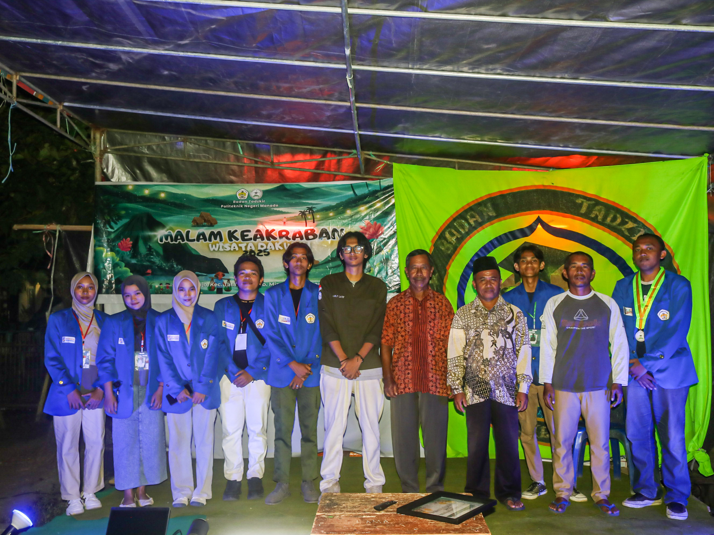

WISATA DAKWAH 2025, BTPNM

Ketua Panitia — Wisata Dakwah 2025, Badan TadzkirLihat Disini
Dalam kegiatan Wisata Dakwah 2025 yang diselenggarakan oleh Badan Tadzkir pada bulan Desember 2025, saya menjabat sebagai Ketua Panitia yang bertanggung jawab dalam mengoordinasikan seluruh anggota panitia serta memimpin jalannya rapat untuk memastikan setiap rangkaian kegiatan berjalan sesuai rencana. Selain itu, saya juga berperan dalam mengatur perencanaan, pelaksanaan, hingga evaluasi kegiatan agar acara dapat terlaksana dengan baik dan mencapai tujuan yang telah ditetapkan.